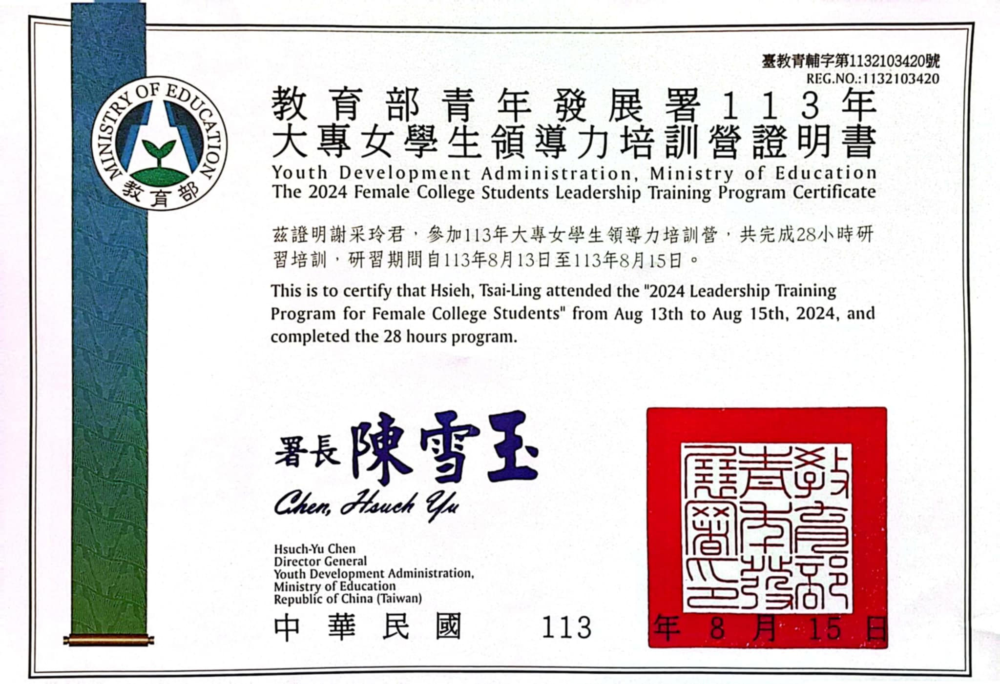

關於我
嗨，我是謝采玲，我出生於2005/08/20，今年19歲，目前就讀於中原大學資訊管理系。 我的MBTI是ENFP快樂小狗。從小我就對世界充滿好奇，對新事物抱持樂觀和細膩的態度。 相信好奇心與細心能帶我看見更多的精彩，並啟發我探索無限可能。
我的興趣
騎馬
吃美食
旅行
排球
能力分析
程式能力
-
60%
Python
-
50%
Java
-
70%
Html
-
60%
Css
專業能力
-
50%
剪輯
-
80%
美編
-
75%
拍攝
-
70%
文書
我的經驗
造夢者microbit
我們到大勇國小做志工，利用微型處理器 Micro-bit 設計了三個活動：寶藏躲貓貓、基本操作教學和電子音樂盒。這些活動讓學生學會使用簡單的編程語言來創建互動性強的項目，培養他們的邏輯思考和問題解決能力。由於距離國小已有一段時間，我們對活動的難度充滿未知，並擔心存在年齡代溝。在活動開始後，學生們的反應非常熱烈，課堂氣氛也十分歡樂，這超出了我們的預期。 雖然我們注意到一些內向的學生在遇到問題時不敢提問，但我們努力以朋友的身份與他們相處，並關注坐在角落的學生。這次活動對學生和我們而言都是一次新奇且充實的體驗。作為大學生轉變為教學者，讓我能從多元的視角學習和傾聽。
解決問題能力競賽

在大學期間，我參加了第二屆問題解決能力競賽，主題聚焦於為行動不便的老年人提供虛擬旅遊的解決方案。我們的團隊開發了一個利用AR和VR技術的系統，讓長者能夠在家中與家人共同體驗旅行的樂趣。這段經歷讓我深刻體會到團隊合作和創新思維的重要性，整個過程大約花了半年時間，從擬訂計畫、持續討論和修改設計，到最終的成果發表。過程中，我們首先進行市場調查以了解老年人的需求，然後開始設計系統功能。作為團隊成員，我們接收到不同的意見和建議，但在整合大家的想法時也面臨挑戰。不斷的迭代與調整讓我們能夠確保最終產品能夠真正滿足使用者的需求。這次經歷不僅讓我從無到有地設計出一個實際的系統，還增強了我的團隊合作能力，並讓我更加珍視創新思維在解決問題中的重要性。
113大專女學生領導培訓營
這次參加台北場的領導培訓營，我深受啟發。這裡的女講師都是來自不同領域的佼佼者，包括攀樹師、女軍人、企業管理者等。她們不僅在各自的領域中取得卓越的成就，更展現了女性在職場中的強大力量。這些講師以自信的姿態和豐富的經驗分享了她們的故事，讓我深刻理解女性在面對挑戰時的韌性和勇氣。她們的成功經歷激勵著我，讓我明白無論在哪個行業，女性都能發光發熱，推動變革。 在培訓營中，我們的任務是發表關於可持續發展目標（SDGs）的報告，重點關注優質教育和減少不平等。我們希望提升大眾對身心障礙族群的認知。在報告中，我們還加入了簡短的表演，最終獲得第三名的佳績。我非常喜歡我們這一組的氛圍，大家都充滿趣味和創意，每個人都是不可或缺的一部分。特別是我們能夠放下手邊的事物，全心專注地討論，讓這次合作非常高效且充實！
Life Maker 人生創造營
這次的創造營課程內容非常豐富，其中一節使用了DISC測驗，幫助我們深入了解自己的個性特質以及未來適合的職業方向。在晚會表演中，我們選擇以默劇的方式呈現故事，講述一位榮民伯伯在榮民之家遇到熱情志工的情境。這不僅讓我們回憶起在榮民之家當志工的經歷，也讓觀眾感受到志工對長者的關懷與支持。 此外，這次創造營中，每個感人的瞬間都讓我和在場的每一位參與者淚流滿面。當我們一起面對自己的情感時，淚水不斷湧出，克服內心的掙扎和不安。大家不知哭了多少次，但這些流淚讓我們更加明白，每個人都有自己需要克服的挑戰與困難。這次經歷不僅是情感的宣洩，更成為我們彼此聯繫的橋樑，使我們更加珍惜身邊的人和共同的回憶。